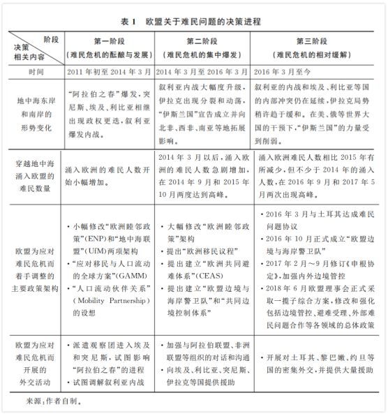
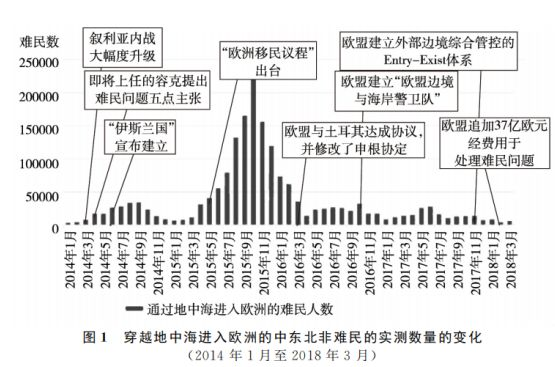
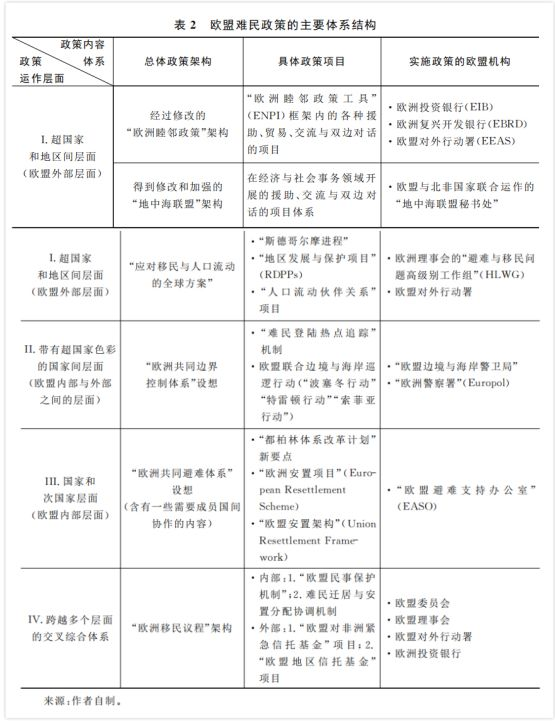

收录于合集

简 介
【作者】 忻华，上海外国语大学欧盟研究中心常务副主任 ，上海欧洲学会学术研究部主任
【来源】 《德国研究》2018第３期
【编辑】 杨艺华
内 容 提 要
难民危机是欧盟当前面临的内外多重危机的重要一环，使欧盟内部矛盾丛生，也令决策层久议难决。难民危机沿着“酝酿与发展” “集中爆发”和“相对缓解”三个阶段逐次向前推进，欧盟难民政策的决策进程与此相关联，其节奏、速度、认知与内容也逐渐变化。这一政策包含一系列总体架构和具体项目，可分为超国家和地区间、国家间、国家与次国家、交叉综合这四个层面，形成庞大而复合的体系。欧盟作为“超国家”实体和“国家间”组织的双重特性，使其关于难民危机的形势认知较为迟钝，相关决策缓慢而低效，其政策不仅难获认同，还造成了各成员国间的“东西矛盾”和“南北对立”。对这一政策的决策机理分析，有助于加深对欧盟决策体系的结构特征与运作规律的认识。
关 键 词
欧盟； 难民危机； 难民政策； 决策机理
一、欧盟应对难民危机的决策进程
要分析欧盟应对难民危机的决策过程，就需要将中东北非的政局演变、难民数量的变化、欧盟应对难民危机的决策内容和欧盟相应的外交活动结合起来加以考察。笔者认为，难民危机的发展和欧盟应对这一危机的决策进程，可分为三个阶段，如表１所示。

（一）危机酝酿与发展阶段的决策
第一阶段始于２０１１年初“阿拉伯之春”的全面爆发，止于２０１４ 年３月叙利亚内战的大幅度升级。突尼斯、埃及、利比亚三国出现急剧的动荡，政权更迭，社会失序，同时叙利亚的激烈冲突演变为内战。 此时 ， 难民渡过地中海流入欧洲的数量虽然在持续增加 ， 但幅度不大 ， 速度不快 ， 因而欧盟仅对长期以来用于处理与中东北非关系的两项主要政策架构 ， 即 “ 欧洲睦邻政策 ” 和 “ 地中海联盟 ” 架构 ， 进行了细微调整 ， 并确立了新的原则 ， 即 “（ 中东北非地区 ） 更多的改变换取 （ 来自欧盟的 ） 更多的回报 ”（ More for More Principle ），试图向中东北非单向输出欧盟的经济模式、政治制度和价值观。这表明欧盟决策层在此阶段仍存在盲目乐观心态，并未意识到在中东乱局的推动下，新的危机已出现在地平线上，将直接危害到欧盟自身的内部秩序。
（二）危机集中爆发阶段的决策
第二阶段从２０１４年４月叙利亚内战大幅度升级开始，延续至２０１６ 年３ 月，即欧盟与土耳其达成协议之时。２０１４ 年４ 月～６ 月，黎巴嫩、以色列卷入叙利亚内战，伊拉克出现分裂和动荡，极端组织“伊斯兰国”崛起，致使地缘形势急剧碎片化。流入欧洲的难民数量开始剧增。联合国难民署（ＵＮＨＣＲ）的实测数据显示，２０１４年４月，穿越地中海流入欧洲的难民数量与３月相比突然增加了１．３ 倍，突破万人的关口，达到１７０００多人，此后迅速上升，直到２０１４ 年底，平均每个月有２ 万多人到达欧洲，这还不包括联合国难民署未能予以登记的偷渡人数。因此 从２０１４ 年 ４月开始，欧洲难民危机进入了集中爆发和急剧恶化的阶段。
**由于欧洲议会和欧盟委员会的换届和权力交接，欧盟决策层直至２０１４ 年底仍未意识到难民危机已经到来。**２０１５ 年３ 月从地中海进入欧洲的难民数为 １１２１９ 万人，１０ 月则为２２２４５３ 万人，７ 个月内增加了１８．８ 倍。相应的海难事故也突然增多。 **２０１５ 年４ 月１５ 日之后的五天里，地中海里连续出现三起难民沉船死亡事件，经过媒体的曝光，惊动了欧盟决策层。此时欧盟决策层才开始认真思考和应对难民危机。**２０１５ 年 ５ 月，欧 盟委员会提出了“欧洲移民议程”，这是欧盟为应对难民危机而提出的第一个系统的总体政策架构。２０１５年３ 月～１１ 月，欧盟委员会对“欧洲睦邻政策”架构作出了重大修改，同时还提出了建立“欧洲共同避难体系”、“共同外部边境控制体系”和“欧盟边境与海岸警卫队”的目标。２０１５年４月和１１月，欧盟理事会还两次召集紧急会议，商议难民危机的对策。
（三）危机逐渐趋缓阶段的决策
从２０１６ 年３ 月下旬欧盟与土耳其达成难民问题协议至今，是难民危机的第三阶段。 欧洲内部的社会生态受到难民危机的强烈冲击，欧盟采用内外结合的视角（Ｉｎｔｅｒｎａｌ－Ｅｘｔｅｒｎａｌ ****Ｄｉｍｅｎｓｉｏｎ），在多领域同时制定和推进多项决策以处理难民问题。 由于土耳其是难民进入欧洲前的重要中转国，２０１６ 年３ 月欧盟与土耳其达成协议，向其提供至少３０ 亿欧元的资金支持，土耳其因而答应帮助管控难民。２０１６ 年１０ 月，欧盟又正式建立“欧盟边境与海岸警卫队”，在北约的协助下对欧盟南部的边境和地中海区域加紧开展巡逻和警戒行动。２０１７ 年初至９月，欧盟对其避难政策架构、申根区内部边境管制体系和边境与海岸巡逻控制体系陆续进行了修补与完善。２０１８ 年２ 月，欧盟理事会又决定追加３７ 亿欧元的资金用于处理难民问题。２０１８ 年６ 月２９ 日，在经历了内部激烈争议之后，欧盟理事会决定实施一揽子综合方案，包括提供巨额财政支持、强化内部社会治理、推进外部边境管控、发展与中东和非洲在难民问题上的合作架构等。在多项政策的综合作用下，２０１６ 年３ 月以后进入欧洲的难民逐渐减少， 没有再出现 ２０１５ 年夏秋之交那样的数量高峰。
（四）危机演进和欧盟应对的节奏
根据联合国难民署和国际移民组织的各地逐月实测数据， 将２０１４ 年初以来跨越地中海进入欧洲的难民人数加以汇总，就形成了图１。图１显示，由于地中海气候的影响，难民迁徙数量在每年的夏秋之交会形成高峰。在危机集中爆发的阶段，２０１５年与２０１４年的高峰数量（即２０１５年１０月与２０１４年９月的实测数）相差６．５倍，可见难民危机的升级速度之快。２０１６年３月欧盟与土耳其达成协议后，涌入欧洲的难民数量减少，危机得到一定程度的缓解， 但２０１６年和２０１７年跨越地中海进入欧洲的难民数量的高峰并未低于２０１４年的水平，表明难民危机并未得到彻底解决。

图１还表明，在中东北非难民潮的几次人数高峰出现前，欧盟虽已有所预料，并出台了政策，但却未能发挥作用。例如：现任欧盟委员会主席容克（Ｊｅａｎ－Ｃｌａｕｄｅ Ｊｕｎｃｋｅｒ）上任之前曾在２０１４年４月～５月提出了“难民问题五点主张”，却未能减缓２０１４年８月～９月的第一次难民潮高峰；欧盟在２０１５年４月召开了理事会紧急会议，５月推出了“欧洲移民议程”，却仍未能减缓２０１５ 年８ 月～１１ 月的第二次难民潮高峰；２０１６ 年９ 月欧盟已决定组建“欧洲边境与海岸警卫队”，却未能阻止２０１６年１０月的新一波高峰。 这表明 ， 欧盟决策体系对形势变化的研判与反应能力有限 ， 对问题的认知与决策的速度和准确度不高 。
二、欧盟应对难民危机的政策的体系结构
难民问题头绪繁杂，涉及欧盟及其成员国在三个方面的多个政策领域 ： １．在对外方面，需要与难民来源国和欧洲以外的中转国开展交涉，施加压力，涉及外交政策和对外援助政策；２．在对内方面，需要监控难民在内部的流动，甄别身份，处理避难申请，提供救助，涉及人口与社会治理的政策；３．在内外之间的交叉区域，需要加强对欧洲外部边境的巡逻与控制，涉及司法、海关和警务规则。 理论上说，《罗马条约》《马斯特里赫特条约》和《里斯本条约》是划分欧盟与其成员国的决策权限的根本依据，条约没有明确规定归属欧盟掌控的政策领域与议题应该都属于各成员国主权范围。然而由于难民政策高度复杂，变化迅速，欧盟与其成员国难以划出清晰的权力与职能的边界。 在应对难民危机的过程中，大致而言，欧盟凭借自身的 “超国家”架构和庞大体量形成的影响，在对外方面发挥着主导作用，而成员国则管控着对内方面，实际管理着难民在本国内部流动的相关事务，同时也主导着边境巡逻与执法事务。但另一方面，成员国需遵守“国家间”的约定，履行“都柏林体系”的相关规定，支持“欧盟边境与海岸警卫局”（Ｆｒｏｎｔｅｘ）等协作机构的工作。
２０１１年初“阿拉伯之春”全面爆发之后，欧盟即着手修订其难民政策体系。随着中东乱局趋于动荡，为应对危机的升级，欧盟在７年多的时间里不断调整原有的制度设计，增补新的政策架构，使其难民政策形成庞杂繁复的体系，包含多个架构和设想，每一个架构和设想又包含多个更为具体的政策项目或实施方案。 笔者按照政策内容和实施主体的差异，将欧盟为应对难民危机而制定的所有政策归纳为四个层面，制成表２。

（一）欧盟应对难民危机的政策的高端层面：欧盟外部的层面
在此层面 ， 欧盟凭借 “ 超国家 ” 的独立实体的身份 ， 借助欧盟对外行动署和欧盟驻中东北非主要国家的外交使团 ， 以双边或多边外交活动的方式 ， 通过具体项目的合作 ， 来实施较为宏观和长远的综合政策架构 ， 如 “ 欧洲睦邻政策 ”“ 地中海联盟 ”、“ 应对移民与人口流动的全球方案 ” 等 。 这些宏观性的综合架构，致力于向欧盟周边地区输送资金、开展交流、施加影响，以便实现欧盟周边地区的经济发展、社会进步和政治改造，借以确保欧盟周边的地缘战略格局的相对稳定与和谐。只有周边国家予以认可和配合，这些架构才能顺利实施并产生效果。 欧盟拥有 “ 超国家 ” 的影响力和庞大的体量 ， 比特定的成员国更容易获得周边国家的认可，因而成为这一层面的政策架构的实施主体，而实施的渠道，是欧盟与周边的区域性组织之间的地区间合作机制，或欧盟与周边特定国家之间的双边合作架构。
（二）欧盟应对难民危机的政策的中间层面：欧盟内部与外部之间的结合层面
**这一层面的政策架构和具体项目都聚焦于建立 “欧洲共同边境控制体系”这一目标，致力于推动欧盟各成员国在边防、警察、情报和海上执法等强力部门主导的领域开展协作，以达到有效打击偷渡和遏制非法移民流入欧洲的目的。**２０１６ 年１０月欧盟正式建立起“欧盟边境与海岸警卫局”，有史以来第一次具备了海上警卫执法能力。２０１８年６月２９日欧盟峰会上作出决定，将由欧盟牵头推动意大利、西班牙和希腊等地中海北岸成员国，与地中海南岸的利比亚等北非国家开展海上巡逻执法合作。不过，由强力部门主导的海岸与边境事务，是国家主权最重要的组成部分，欧盟成员国并不愿意将上述领域的实质性权力让渡给欧盟。 有鉴于此，欧盟对这一层面政策架构的制定与实施，并不享有强制性的主导权或指挥权，欧盟只有在各成员国达成共识的基础上，借助于国家间的协商与合作，才能推进 “欧洲共同边境控制”框架内的政策架构和项目。
（三）欧盟应对难民危机的政策的基础层面：欧盟内部的层面
**这一层面的总体架构主要是 “欧洲共同避难体系”。**目前“欧洲共同避难体系”尚未完全建立，欧盟决策层当初设想的诸多制度要素并未在实践中确立， **所以这一 “体系”仍是介于政策设想和实质性的架构之间的一项制度安排。**这一体系最具体的架构是关于难民避难申请的“都柏林体系”，但２０１４ 年以来难民危机的集中爆发，表明“都柏林体系”原有的规则架构难以有效处理实际问题。因而自从２０１６ 年 ５月以来，在德国默克尔政府的推动下，欧盟决策层开始力推关于“都柏林体系”的的新一轮改革计划。然而，审查避难申请、决定是否接纳难民的权力，属于内部社会治理的范畴，仍在欧盟各成员国主权范围之内。随着当前反全球化和疑欧主义的民粹力量的崛起，各成员国处理移民与避难事务的态度愈加严苛，对２０１６ 年以来带有硬性摊派和“甩包袱”色彩的“都柏林体系”新一轮改革计划愈加反感，强烈抵制。真正建立起“欧洲共同避难体系”的时间仍显得遥遥无期。
三、欧盟应对难民危机的决策机理的突出特点
关于欧盟的决策机制的本质特征，历来存在“新功能主义”（Ｎｅｏ－ｆｕｎｃｔｉｏｎａｌｉｓｍ）和 “政府间主义”（Ｉｎｔｅｒ－ｇｏｖｅｒｎｍｅｎｔａｌｉｓｍ）两种理论范式之间的争论。前者认为欧盟的决策本质是“超国家”权威对原属于国家主权范围内的事务的管制与运作，后者则认为欧盟的运作是“国家间”协商与妥协的结果，仍反映出主权国家的决策者的意图与偏好。 欧盟应对危机的难民政策的结构层次表明， “新功能主义”和“政府间主义”两种理论范式都有一定道理，欧盟同时兼备“超国家”实体和“国家间”组织的特性。虽然欧盟难民政策的体系庞杂，内容繁多，但其各项政策都可以归入从 “超国家”到“次国家”的各个层面。这种双重特征制约着欧盟应对难民危机的决策活动的节奏与速度，影响乃至塑造了欧盟相关政策的议程设置、方案抉择、实施方式和实际效果，使其具有以下四个鲜明特点。
（一）特点之一： “超国家”和“国家间”层面的决策推进过程存在差异
总体而言， **在 “超国家”层面运作的政策架构，虽然决策和实施的速度较慢，但能持续向前推进，节奏相对平稳。**例如，“欧洲睦邻政策”“地中海联盟”和“应对移民与人口流动的全球方案”这三项架构主要在“超国家”层面实施。欧盟内“超国家”色彩最为强烈的决策机构，即欧盟委员会，完成了这三项架构的总体规划与具体项目的设计；欧盟自身的财政收入成为这三项架构所需资金的主要来源；欧盟作为独立实体对欧洲区域以外的国际组织和特定国家开展的外交行动，成为这三项架构的主要实施方式。这三项架构都是欧盟在２１世纪的最初十年里推出的，从出台至今一直持续向前运行。
**与此形成对照的是，在 “国家间”层面运作的政策架构，更深刻地受制于各成员国对利益分配的算计和合作意愿的强烈程度，不仅推进速度缓慢，而且政策制定和运行的节奏极不稳定，不时出现争执和僵局，起伏大，变数多。**例如，“欧洲共同边境控制体系”的设想和 “欧盟边境与海岸警卫局”的建立，都经历了一波三折的漫长的决策过程，前者至今尚未完全成型。这是因为边境控制涉及情报收集与警察执法等国家主权的核心领域，欧盟各成员国在这些领域并未让渡实质性的权力，其对具体事务的合作意愿，影响着上述设想的推进程度，也牵制着“欧盟边境与海岸警卫局”的海上巡逻执法活动。而２０１６ 年以来南欧成员国对德国支持的“都柏林体系”改革计划强烈不满，致使关于“欧洲共同避难体系”的政策讨论出现僵局。
（二）特点之二：双重特性影响下的欧盟认知与决策的效果较差
**“ 超国家”体系形成了重床叠屋的架构，致使欧盟了解形势变化、处理利益诉求的过程冗长而复杂，难免出现信息扭曲和失真；而“国家间”的决策体系的运行依赖于各成员国的共识，一旦成员国之间分歧严重，无法妥协，就难免各执一词，久议不决。**因此，欧盟作为“超国家”实体和“国家间”组织的双重特性，使其应对难民危机的决策认知的准确度有限，容易偏离现实，实施效果较差。
实际上，２０１０年底 “阿拉伯之春”爆发后，难民与移民问题就一直处在欧盟决策层的关注范围之内，但也一直未进入决策者优先考虑的议题范围。２０１１年～２０１２年欧盟决策层仅对原有的政策架构进行了微调，并未预计到难民问题的严重性。２０１４年春夏之交，涌入欧洲的难民数量迅速上升，危机爆发，欧盟决策者的关注度才开始提高。２０１４年５月～９月新一届欧盟委员会产生时，即将上任的欧盟委员会主席容克阐述了关于移民（难民）政策的五点主张，但仍然只将难民问题视作众多“问题”里的一项，而不是“危机”。直到２０１５年４月难民在地中海里沉船死亡的事件连续发生，震动了欧洲社会，欧盟决策者才意识到难民的涌入已经从“问题”演变成了一场“危机”。自此之后欧盟决策才启动危机决策的程序，开始较为密集地研讨相关的政策方案。
（三）特点之三： “超国家”的决策机制越来越难以获得普通民众的支持
随着难民危机的加剧，越来越多的欧洲民众认同疑欧主义思潮，反感和抵触欧盟的“超国家”特性。受其影响，民众对欧盟处理难民危机的政策的认可度相当低。欧洲民众的反感心态源于两点原因。 一方面， “超国家”特性蕴含着宏大叙事的“政治正确”的理念体系，欧盟决策层执着于这样的理念，无法及时准确地收集和处理基层民众的利益诉求，难接“地气”。 虽然欧盟多年来推动“多层治理体系”的建设，但其决策层级繁多、组织架构庞杂的状况难以改变，与欧洲基层社会之间仍然距离遥远，沟通不畅，最终使欧盟领导人对难民危机这样的复杂问题的认知严重偏离民意。
另一方面，欧盟 “超国家”体系从欧洲民族国家体系不断汲取资源和权力，建立起各成员国难以直接控制的“利维坦”式架构，还试图不断拓展自身权力的边界，这使欧洲民众感到自己正在受到疏离于本国主权与文化体系之外的“布鲁塞尔官僚机器”的操纵，对其日益反感和厌恶。再加上全球化和地区一体化累积的矛盾近年来进入集中爆发的阶段，激进民粹主义政党迅速崛起，在其推波助澜之下，疑欧主义的思潮大行其道，欧洲草根阶层对精英主导的欧盟“超国家”体系越来越不信任，对欧盟难民政策也就越来越不认同。
（四）特点之四： “国家间”特性使欧盟难民政策卷入成员国间的“东西矛盾”与“南北对立”
２００４年～２００７年欧盟东扩以后，西欧老成员国和中东欧新成员国在文化传统、历史经验、意识形态和政策偏好等观念层面的差异逐渐凸显，形成了“东”“西”之间的矛盾冲突。２００９年～２０１０年欧洲主权债务危机爆发以来，德国通过控制欧洲中央银行，强迫希腊等南欧国家实施财政紧缩政策，并操纵欧元区的共同货币政策为自身的出口提供便利，致使德国相对于南欧的贸易顺差持续扩大，导致“南” “北”之间分化严重。２０１５ 年下半年以来，随着难民危机的加剧，在德国默克尔政府的强力推动下，欧盟开始在“欧洲共同避难体系”构想的框架之内强力推行“欧洲安置项目”，以接近硬性摊派的方式向各成员国分配难民安置配额，并试图说服各成员国接受新一轮“都柏林体系”改革计划，引起各成员国的反感和抵制，引发了中东欧和南欧的成员国与德国和欧盟之间的尖锐矛盾。 欧盟应对难民危机的决策使内部原本已存在的“东西矛盾”与“南北对立”有愈演愈烈之势。
从２０１５年７月～８月德国默克尔政府决定欢迎难民之时起，德国与维谢格拉德集团四国（Ｖｉｓｅｇｒａｄ－４），即波兰、匈牙利、捷克和斯洛伐克之间就一直争执不断，并迅速升级为后者与欧盟之间的对抗。波兰和匈牙利始终拒绝接纳任何难民，捷克从２０１７年初开始也坚决停止接纳难民。匈牙利和斯洛伐克两国早在２０１５年１２月就向欧洲法院起诉欧盟理事会，要求其废除摊派难民的相关决定。而欧盟委员会则在２０１７年６月１４ 日宣布对波兰、匈牙利和捷克三国正式启动制裁程序。 维谢格拉德集团四国的强硬抵制，最终迫使欧盟在２０１７ 年９ 月底暂停了硬性摊派难民接收数额的做法。
与此同时，地中海北岸的西班牙、意大利、希腊、塞浦路斯和马耳他五国作为经济发展水平较低的欧盟成员国，处在承受难民潮的第一线，却并未得到欧盟强有力的支持，而“都柏林体系”的新一轮改革计划里一些武断的“甩包袱”式的规定，反而可能加重这五国的负担。２０１８ 年５ 月，上述五国联合发表立场意见书，表达了强烈不满。２０１８年６月２８日～２９日的欧盟峰会上，意大利由民粹主义政党掌控的新政府对欧盟难民政策意向采取强硬的否决立场， 迫使此次峰会进行了长达１０小时的彻夜谈判，才勉强达成决议。 总之，“欧洲共同避难体系”的推行已遇到严重阻力，前景难料。
四 、结语
上至罗马教皇方济各（Ｊｏｒｇｅ ＭａｒｉｏＢｅｒｇｏｇｌｉｏ），下至欧洲媒体，都将２０１４ 年～ ２０１５年集中爆发的难民危机称为“二战以来欧洲面临的最大的悲剧”。确实，难民危机强烈冲击了欧洲现有的社会秩序，改变了欧盟在对外战略、边境管控和内部治理等领域的形势认知和决策方向，甚至催生了欧盟内部的分歧与裂痕，抑制了欧洲一体化的推进速度，可谓影响深远。实际上，只要中东北非地缘政治格局的碎片化趋势仍在持续，难民危机就难以彻底平息，欧盟应对这一危机的决策活动也将持续下去。同时，欧盟所具有的“超国家”实体和“国家间”组织的双重特性，决定了欧盟的难民政策隐含着结构性的内在矛盾，这些矛盾将随着相关决策的持续进行而逐渐凸显，今后欧盟内部围绕难民政策产生的分歧与裂痕仍会继续加深。对欧盟难民政策的决策机理的分析，有助于人们更加深刻而系统地认识欧盟决策体系的结构特征与运作规律。
声明
此文为国政学人微信公众平台外文编译系列文章之一，由国政学人编辑首发，不代表本平台观点。欢迎转发分享，未经授权谢绝转载。如有问题，请联系guozhengxueren@163.com
更多阅读
国政学人 （ID：guozhengxueren)
为方便学人及时阅读高质量文章
别忘把国政学人设置 星标 哦~